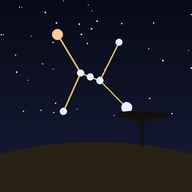
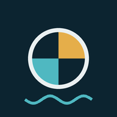

Saddex app, hal cir

Cirdhowr
Telefoonka cirka u jeedi, wuxuu ku tusayaa haguhu xiddig kasta oo aad aragto magaceeda Soomaaliga ah. Sidoo kale waxaad ku arki kartaa rugaha, meerayaasha, Jidcirir, godadka iyo bilaha dhalanaya.
Godadka Dayaxa
Habeen kasta: godka uu dayuxu fadhiyo, karmada iyo dhammada, sida 28-da god ee buugga Afaggaal.

Saadaasha Badda
Mawjadaha, dabaylaha iyo roobka xeebaha dhulka Soomaalida, saadaal 7 maalmood ah oo ku saabsan magaalooyinka xeebaha saaran.
28-da god ee dayuxu dego
Soomaalidu waxay cirka u qaybisay 28 god oo uu dayuxu habeen kasta mid dego. Godadka waxay u qaybsamaan afar kooxood oo xilliyada sannadka la socda. Dhibicda iftiinka leh waa godka uu dayuxu caawa fadhiyo.
Aqoon soo jireen ah iyo qalabka cusub
Cirday waa mashruuc bilaash ah oo soo nooleynaya falagga Soomaalida: magacyada xiddigaha, godadka dayaxa, majarayaasha doonyuhu ku socon jireen iyo kaltirsiyada. Waxaa laga duulayaa buugga Afaggaal iyo ilo kale oo Soomaaliyeed.
Xisaab kasta waxaa lagu sameeyaa telefoonkaaga, sidaas daraaddeed app-yadu internet la'aan ayay ku shaqeeyaan. Waxaa lagu heli karaa Soomaali, English iyo Carabi.